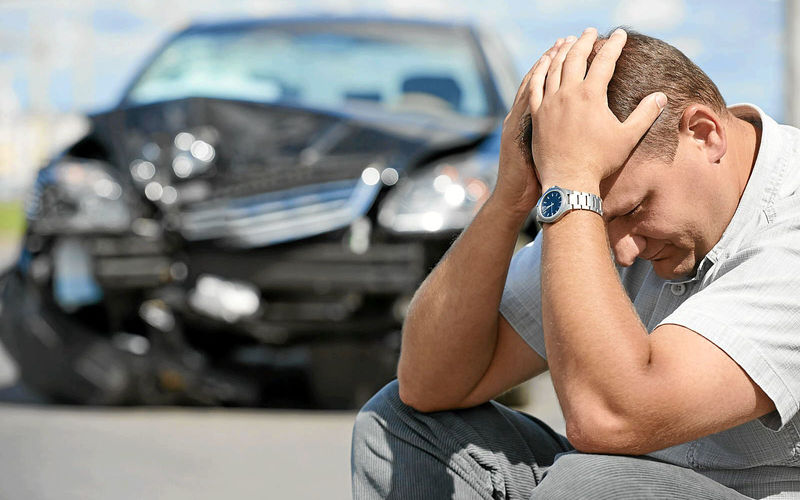

Сколько раз мы слышали по радио, смотрели по телевизору и читали в прессе об автоподставах, но, вспомните, о чем конкретно шла речь. Разумеется, о случае, когда водителя вынуждают перестроиться в правый ряд, дабы пропустить спешащую иномарку. Дальше исход понятен – перестроение, и сзади в автомобиль въезжает еще одна иномарка. Сразу же находятся свидетели, водителю предлагают решить все сразу, не вызывая ДПС, и так далее. После того как данные случаи получили массовую огласку, а также после введения ОСАГО, мошенники, вроде бы, исчезли. Но на самом деле это не так. Чем же они занимаются сейчас? Разберем по самым основным пунктам и рассмотрим наше поведение в каждом случае.
1. Стандартная, описанная выше, подстава. Однако если раньше водителю предлагали все решить на месте, то теперь «заработок» осуществляется за счет самого факта ДТП, который регистрируют в ГИБДД, и мошенники получают постоянные компенсации благодаря «своим людям» в страховых компаниях. Так и кочуют мошенники из одной страховой компании в другую. Но ведь при этом страдает водитель второго автомобиля. Как быть? Главный совет – это страхование собственного авто по автоКАСКО.
Разумеется, данный вид защиты доступен далеко не всем. Поэтому рекомендуем поведение на дороге: по возможности держитесь правого ряда (этого, кстати, требует и ПДД – при свободной правой полосе двигаться в правом ряду), если видите приближение сзади автомобиля – не спешите моментально перестраиваться. Как правило, при приближении сзади автомобиля на большой скорости, водитель реагирует незамедлительно и перестраивается (особенно, когда вам мигают фарами дальнего света). Оцените обстановку. Мошенники, выбирая способ ДТП, теперь уже провоцируют ДТП за счет «мертвых зон» автомобиля – в зеркало заднего вида никого не видно, а потом оказывается, что вы попросту не заметили и помяли иномарке левое переднее крыло.
2. У вас на машине есть колпаки? Мошенники действуют просто. С вашей машины снимается колпак (как правило, с заднего левого колеса). На заднем крыле тряпкой при несильном прижиме протирается участок с этой же стороны. Вы начинаете движение, и через полкилометра вас догоняет автомобиль, водитель которого в окно показывает вам колпак от вашей машины. Остановившись, вам сообщают о том, что вы вот, мол, в потоке движения при перестроении помяли автомобиль. Даже колпак отлетел. Когда вы говорите о том, что не заметили ничего подобного, и в таком случае согласны вызвать сотрудников ГИБДД, вам говорят о том, что вы скрылись с места ДТП и вас догнали (тому есть подтверждение – 3-4 свидетеля в машине «потерпевшего»). А что такое «скрылся»? Это вплоть до лишения прав! Вам это надо? Конечно же, нет, тем более мошенники – это умелые психологи. Вы и оглянуться не успеете, как вас убедят в том, что вы виновны, что вы готовы оплатить весь ремонт, причем сразу.
Как же быть в такой ситуации? Вызывайте ДПС! Мошенники «исчезнут» также быстро, как и появились, а даже если они и согласятся на вызов сотрудников ГИБДД, утверждайте, что не знаете, как произошло ДТП, и не считаете себя виновным хотя бы потому, что другой автомобиль также уехал с места ДТП. Предложите инспектору подъехать к предполагаемому месту столкновения (например, крыло к крылу) и сравните высоту и расстояния поврежденной части автомобиля мошенников и протертую вашу (кстати, это можно сделать сразу, еще до приезда ДПС), после чего сделайте фото на мобильный телефон (как правило, фотоаппарат с собой не у каждого). Сделайте десятка два фотографий с разного ракурса. Эти фотографии помогут вам для установления факта мошенничества. Никаких выплат после этого не последует. «Потерпевшие» даже до страховой компании не доедут.
В описанном виде мошенничества стал преобладать и еще один. Та же самая схема, но вам предъявляют не аккуратную вмятину, а небольшую царапину, сделанную заблаговременно. За царапину с вас требуют всего 500-1000 рублей. Вам объясняют, что намного выгоднее вам заплатить эту сумму. И аргументы вполне обоснованные: при вызове ДПС это займет до 3 часов вашего времени, а что потом? Потом страховая компания повысит для вас ставку ОСАГО на 50%, что составляет в ряде городов от 1000 до 3000 рублей. Вам это нужно? Конечно же, нет. Проще заплатить эту несчастную тысячу и разъехаться, тем более что на вашем авто повреждения нет. Если вы чувствуете подставу, отрицайте факт ДТП и звоните в ГИБДД (можете сделать вид, что звоните). Мошенники немедленно ретируются! По прикидкам, один такой автомобиль может «заработать» порядка 20 тысяч в день.
3. Вы сбили человека. Как это может произойти? Вы движетесь со скоростью 40-50 км/час, и вдруг стоящий на обочине человек попадает на ваше лобовое стекло и падает на землю. Страшно? Конечно. Но ведь человек стоял! К сожалению, когда происходит попадание на лобовое стекло, водитель полностью теряется, и потом уже никогда не вспомнит деталей, поэтому дальше происходит примерно следующее. Потерпевший сообщает о том, что вы его сбили, у него перелом руки и ноги, а может еще и ребер…Вам предлагается оплатить 5-20 тысяч сразу и не иметь потом проблем. Что же делать? Во-первых, если вы действительно сбили человека, вам придется за это отвечать. Человек жив, может, есть переломы, а может, и нет – но вам нечего бояться. Ловите машину, отправляйте пострадавшего в ближайшую больницу, а сами вызывайте ДПС (если вы уберете автомобиль с места происшествия, доказать что-либо будет проблематично). ОСАГО предполагает вполне приличную выплату пострадавшему, вы же отделаетесь штрафом (если будет доказана ваша вина). Мошенники, как правило, отказываются куда-либо ехать. В любом случае, необходимо взять расписку с потерпевшего о том, что он не имеет к вам претензий (можно привлечь и свидетелей, среди которых обязательно будут и подставные).
4. Вы сбили ребенка. Это намного худшая ситуация, нежели описанное выше. Это происходит так. Вы сдаете назад, затем трогаетесь и начинаете движение вперед, и слышите крики и стук по крышке багажника. Знаете, что вы сделали? Сдавая назад, сбили ребенка. Никаких повреждений у авто, никаких царапин у ребенка, но масса свидетелей говорит в один голос: вы сбили ребенка. Что вы нарушили? Вы начали движение и не убедились в полной безопасности, вы сбили человека, а это еще более серьезное нарушение. В таком случае «родители» требуют также от 5 до 15 тысяч рублей. Сбили ребенка, а у него теперь травма чего-либо, плюс испуг и еще что-нибудь. Если в таком случае дело доходит до суда, помимо страховки ОСАГО (если были повреждения органов человека) родители могут потребовать компенсации морального вреда – ребенок испугался, боится машин, боится выходить на улицу и пр. Суд будет на стороне потерпевшего, тем более что по нашему закону, даже если водитель не виновен, он обязан компенсировать потерпевшему буквально все, что можно. Обо всем этом вам сообщают юридически грамотные «родители». Это подстава. Требуйте вызова сотрудников ДПС и отправления ребенка в больницу. Подобное срабатывает и действует на мошенников достаточно сильно. Вы просто расходитесь полюбовно.
Уважаемые водители! Описанные подставы – это основные уловки мошенников. На самом деле их намного больше, и каждый день появляются новые и новые. Никогда не теряйте самообладания. В любом случае возьмите минуту, и просто, сидя в машине, успокойтесь, проанализируйте ситуацию, не поддавайтесь на моментальные провокации и психологическое давление. Делайте фотографии с лицами всех участников событий, звоните друзьям и знакомым, чтобы подъехали и стали свидетелями всего произошедшего! А в целом я желаю вам удачи на дорогах! Не попадайтесь на уловки мошенников! Защищайте себя всегда и везде!
Еще немного об автоподставах ...